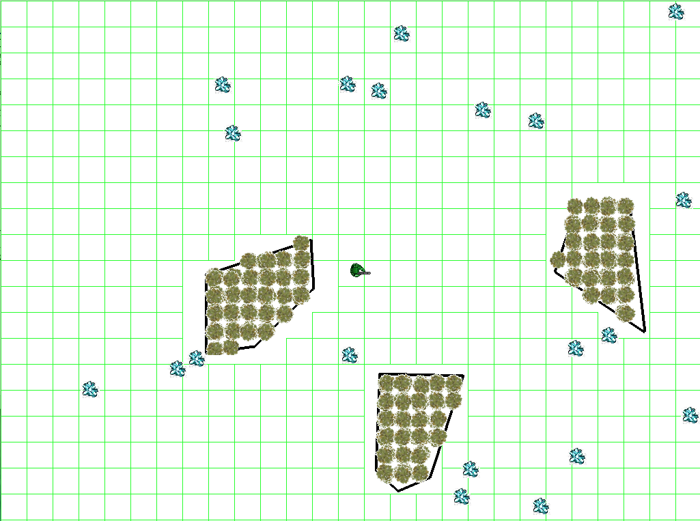

The purpose of this exercise is to acquaint you with the Python game engine we will be using in the class.
One of the main uses of artificial intelligence in games is to perform path planning, the search for a sequence of movements through the virtual environment that gets an agent from one location to another without running into any obstacles. For now, we will assume static obstacles. In order for an agent to engage in path planning, there must be a topography for the agent to traverse that is represented in a form that can be efficiently reasoned about. The simplest topography is a grid. Think of an imaginary lattice of cells superimposed over an environment such that an agent can be in one cell at a time. Moving in a grid is relatively straightforward: from any cell, an agent can traverse to any of its four (or eight) neighboring cells.
In this assignment, you will write the code to superimpose a grid over any given terrain so that an agent can navigate by moving left, right, up, or down from cell to cell. The code to generate the grid should work on any terrain such that an agent can never collide with an obstacle.
But first, you need to become familiar with the python game engine in which you will be working.
The game engine is object-oriented. The primary object is the GameWorld, which is a container for all other obstacles. Most importantly, the GameWorld object contains the terrain of the virtual environment. The terrain is represented as a list of Obstacle objects, which themselves are polygons—lists of points such that there is a line between every adjacent point (and the first and last points in the list. The GameWorld also manages the agents, bullets, resources (things that agents can gather) and computes collisions between all objects and obstacles. The GameWorld also does important stuff like run the real-time game loop and maintain the rendering windows, but you shouldn't need to worry about that. What you do need to know is that every iteration of the game loop, called a tick, the update method is called on all dynamic objects.
Below are the important bits of information about objects that you will be working with or need to know about for this assignment.
GameWorld is defined in core.py
Member functions:
Obstacle is defined in core.py. An Obstacle is a polygon through which Agents cannot move.
Member functions:
Agent is defined in core.py. Agent is the class type of the player avatar or non-player characters. Aside from drawing itself, an Agent knows how to move (which it inherits from its super-class Mover) and shoot. If it is moving to a particular destination, it updates its location every tick. Agents maintain a timer to control how often it can shoot.
While the Agent class does know how to move in a straight line toward a given point, it does not know how to move around an environment without colliding with obstacles. When instructed to move, it will move in a straight line from its current position to a target position. The intelligence in how to avoid obstacles is contained in a sub-component of the Agent, called the Navigator.
Member variables:
Member functions:
Navigator is defined in core.py. A Navigator contains the smarts for how to get around in the game world without running into obstacles. Think of it as a brain that gets attached to an agent that controls its movement. Its primary function is to compute a path between two points that steers the Agent clear of any obstacles. A path is a set of intermediate way-points that the agent should navigate to in pursuit of arriving safely at its ultimate destination. Path planning can be done in many different ways and different AI techniques will sub-class from Navigator. Once a path is computed, it sends call-back messages to the Agent to move from intermediate way-point to intermediate way-point.
Member variables:
Member functions:
GridNavigator is defined in gridnavigator.py. GridNavigator specializes the Navigator "brain" to work on grid topologies.
Member variables:
Member functions:
GreedyGridNavigator is defined in gridnavigator.py. The GreedyGridNavigator does two things. First, it creates a grid-based path network, as described above. Second, it causes the Agent to navigate to a destination by trying to find the neighbor (left, right, up, down) that is closest to the destination. Greedy navigation may fail, so the path terminates after 100 cells at which point the Agent moves directly to its destination from the last point reached. Thus, the Agent can possibly collide with obstacles if the greedy path does not reach the destination before the threshold is reached.
Member functions:
Miscellaneous utility functions are found in utils.py.
You must superimpose a grid over a given game world terrain consisting of obstacles. The grid is a 2D array of booleans such that a False in any particular cell means the Agent cannot walk into the cell and a True in any particular cell means the Agent can walk into the cell. We have provided two different types of Navigator: RandomGridNavigator and GreedyGridNavigator. Neither are guaranteed to deliver an Agent to their final, desired destination.
When you click on the screen, you indicate where you want the Agent to traverse.
Step 1: Download and install the game engine. This must be done in two parts. First, you must install PyGame, the underlying rendering engine. Follow the instructions for Windows, Mac, and Linux found in the zip file. See the installation instructions.
Step 2: Verify the installation is successful by running the game engine:
You should see a top-down view of the game world, consisting of some obstacles (black polygons), some resources (crystal sprites), and an agent. This agent is the player avatar, meaning it is controlled by the player. When you click on a point on the screen, the agent will proceed directly there. runbasic.py uses the base Navigator class, which does not avoid collisions.
Step 3: Run the grid navigator code:
You will see the same thing as before with runbasic.py. However, when you click on the screen, the agent will not move. This agent uses RandomGridNavigator, but does not have a grid to navigate with yet. You will create a grid that the agent can use to navigate the world.
Step 4: Modify mycreategrid.py and complete the myCreateGrid() function. myCreateGrid() must do two things:
The inputs to myCreateGrid are: a reference to the GameWorld and the cell size, which indicates the width and height of each cell. Grid cells can touch the borders of the game world. That is, a cell can have its upper left corner at point (0, 0).
The grid should have a cell for every point in the GameWorld's rectangular region. However, if the cell is not fully contained inside the GameWorld's dimensions, it is to be marked untraversable. If it is simply touching the boundary of the Gameworld, it is to be marked traversable.
Step 5: Test your implementation. You can use either RandomNavigator (as above) or GreedyNavigator (shown below); both navigators use the same maps.
> python rungreedygridnavigator1.py
> python rungreedygridnavigator2.py
> python rungreedygridnavigator3.py
Additional testing can be done by making your own maps.
This homework assignments is worth 5 points. Your solution will be graded by autograder. The autograder will look for grid cells that are incorrectly marked in comparison to a reference solution. For every map that your solution is tested against, 1 point will be deducted if at least one cell does not match with the reference solution. The autograder will test your solution on 5 maps, three of which are provided as test maps.
Debugging within the game engine can be hard. Print statements will be one possible way of figuring out what is going on.
It can also be helpful to draw debugging information, such as lines and points, to the screen.
To draw a cross on the screen use the following:
In general, you should be able to get all the data you need from the GameWorld, Obstacles objects, and the Agent through getter functions. If you find yourself directly accessing member variables of other objects, you may want to rethink your approach.
It is good to test your techniques on new maps. If you want to make new maps, make a copy of one of the run*.py files and edit the call to world.initializeTerrain(). initializeTerrain(polygons, color, linewidth, sprite) instantiates the physical Obstacle objects (specifically ManualObstacle objects) in a game. A list of polygons is given, such that there is one polygon for each obstacle. A polygon is a list of points where a point is a tuple of the form (x, y). The color of the line is given, in the form (red, green, blue) where each values is between 0 and 255. The default color is black (0, 0, 0). Linewidth indicates how thick to make the line of the polygon. Obstacles will be filled with repeating sprites if the optional sprite parameter is given as a string pathname to an image file.
Sometimes the game world is larger than the screen resolution of a computer. The size of the screen is independent of the size of the game world. GameWorld can be initialized with three parameters. The first is a seed to help reproduce random values. If seed is None, the current system time is used as the seed. The second is the dimensions of the world in the form (x, y). The third is the dimensions of the screen in the form (x, y). The dimensions of the screen should be equal to or smaller than the dimensions of the world.
If an obstacle is directly on the border of a cell, that cell should be marked as untraversable.
To submit your solution, upload your modified mycreategrid.py. All work should be done within this file.
You should not modify any other files in the game engine.
DO NOT upload the entire game engine.